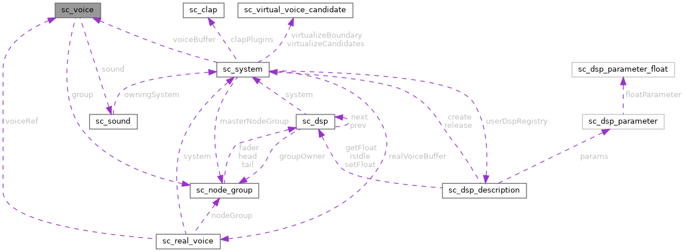

|
Sound Bakery
Open-source audio middleware for games
|
|
Sound Bakery
Open-source audio middleware for games
|
A voice is a window into a single sound that may or may not be audible and rendering. More...
#include <sound_chef.h>

Public Attributes | |
| sc_voice_handle | realVoiceHandle |
| sc_sound * | sound |
| sc_node_group * | group |
| sc_atomic_float | gain |
| sc_atomic_float | pitch |
| sc_uint8 | priority |
A voice is a window into a single sound that may or may not be audible and rendering.
Sized to fit one 64-byte cache line so an array of voices maps cleanly to cache-line boundaries. A _Static_assert in sound_chef.c pins this.
Voices are limited by the sc_system_config::maxVoices value passed during system initialization.